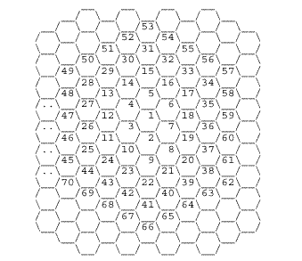

Each year, the ACM
holds a series of Programming Contests. The regional
contests are held in November of each year. The winner of the regional
contest goes on to the International Contest. There are prizes at
both levels that include computer hardware and software, scholarships,
and just plain cash. Here's some general information about the contests:
-
This year's regional contest will be held at Kean College
in Union, New Jersy on Sunday, 5 November 2000. For more information,
see http://www.cs.cornell.edu/acm
.
-
Students enter in teams of three. They compete, at
the regional level, in three different categories: teams consisting
solely of freshmen and sophomore students, undergraduate teams with at
least one upperclassman, and teams with a graduate student on them.
Prizes are awarded to the top teams in each category.
-
Contestants have 5 hours to solve 6 or more posed programming
problems.
Here's some sources of sample problems:
-
At the Math & Computer Science Club meeting on 23 March,
we discussed the first problem from the 1999 International Finals (see
the
past exam site for the complete exam ). The question asked for
you to find the distance between any two cells of a "honeycomb," where
the cells are numbered clockwise from the center:

We started by trying to figure out the distance between
the cell numbered "1" and a cell entered by the user, which we will call
"a."
First, at the meeting, we started looking at the 4 o'clock,
8 o'clock, 10 o'clock, 12 o'clock, and 2 o'clock branches that extend from
the center. We didn't give enough conditions for those branches:
-
Notice that if a is on the 4 o'clock branch extending out
from 1, then (a-1)/6 == 0. But that's not quite enough, since (25-1)/6
== 0, but 25 is not on that branch. So, we need more conditions than
what we had on the board. We noticed that the differences between
the cells on the 4 o'clock branch was 7-1 = 6, 19-7=12, 37-19=18,
61-37=24. So, we can write: 61 = 24+18+12+6+1 = 4*6+3*6+2*6+1*6+1
= (4+3+2+1)*6+1. We can figure out similar formula for if a is on
any of the other branches.
-
We can write a simple loop to give the distance for cells
on the 4 o'clock branch:
int dist = 0, i, sum = 0;
for ( i = 0 ; i < a/6 ; i++ )
{
sum += i;
if ( a == (sum*6+1) )
{
dist = i;
break;
}
}
The above loop checks if a is equal to the sum (1+2+3+...+i).
What if you check whether a is less than sum*6+1? When i = 1, this
gives all the elements within distance 1 from the center. When i=2,
we have sum*6+1= 19, or all elements within 2 from the center. In
general, if a is less than or equal to (1+2+...+i)*6+1, then a is within
distance i from the center. So, by changing the equality sign to
a less than or equal sign above, we have the distance from a to the center.
Now, for the general case, when you need to find the
distance between two cells a and b. One way to approach this is if
b=1, then we're done. Otherwise, think about shifting the whole honeycomb
over (including where a and b are) until b is now numbered 1. Then,
use the loop above to calculate the distance.
| Last Updated:
24 March 2000. |